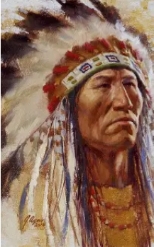
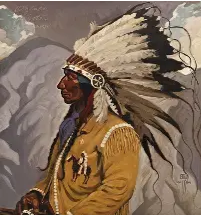

A Native American-inspired Halloween tale of respect, mystery, and courage
Long ago, in a village beside a winding river, there lived a young boy named Mato. He loved listening to the stories told by the elders around the autumn fire. As the leaves turned gold and red and the nights grew longer, the elders spoke of a special evening when the veil between the ordinary world and the spirit world seemed thin.
One chilly autumn night, Mato's grandmother handed him a small lantern made from a hollowed squash. "Stay on the forest path," she said. "And remember, not every spirit wishes to frighten you. Some simply wish to be remembered." Mato nodded and set out toward the river to gather reeds for the next day's celebration. The moon hung low and bright above the trees.
As he walked, he noticed strange lights dancing among the branches. They flickered blue and silver, moving silently through the woods. Mato's heart began to race. He remembered stories of wandering spirits and tricksters.
Suddenly, one of the lights drifted onto the path ahead of him. "Who are you?" Mato asked. The light swirled gently and transformed into the shape of an old woman wearing clothing from many generations ago. "I am a keeper of stories," the spirit said. "Few remember my name now."
Mato wanted to run, but his grandmother's words echoed in his mind. "What story do you keep?" he asked. The spirit smiled. "I keep the story of kindness." She pointed across the river. There stood a giant oak tree. Beneath it rested a forgotten stone marker. The spirit explained that long ago travelers had stopped there for water and shelter, but over the years people had forgotten the place.
"Will you help me remember?" she asked. Mato crossed the river and cleared away the fallen leaves covering the marker. As he worked, the moonlight brightened. One by one, the dancing lights appeared around him. They were not frightening spirits at all. They were memories: hunters, storytellers, children, and elders from long ago. They gathered quietly beneath the oak.
When the marker was clean, the old woman nodded. "Now our stories will not be lost." The spirits began to fade with the coming dawn. Before disappearing, the keeper of stories touched Mato's lantern. The squash lantern glowed with a warm golden light.
"Whenever you share a story with respect," she said, "this light will guide others." Mato returned home and told the elders everything that had happened. They listened carefully and then walked with him to the oak tree. From that year forward, every autumn the village visited the place, shared stories, and remembered the people who came before them. And some say that on crisp Halloween nights, if you walk quietly beside the river, you may see silver lights dancing among the trees, keeping watch over the stories that should never be forgotten.
The End 🎃🍂✨
Made with Chatgpt